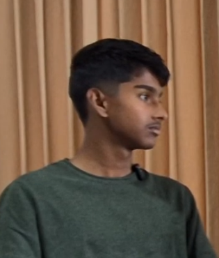

About
Eco-Mythbusters Roundtable is a digital hub combining a myth-busting blog series with a roundtable podcast series. Each blog post breaks down a common sustainability myth and each podcast episode builds on the blog by featuring roundtable discussions with peers, local voices, and professionals, possibly ranging from environmental scientists, NGO workers, and sustainability entrepreneurs, to tech innovators and policymakers
Mission Statement
To help young people and communities make smarter sustainability choices by debunking eco-myths, while also amplifying professional and community voices that connect environmental issues to real-world challenges and solutions.
About the Creator

Ritayush Suchismita Dey
Hi! I'm Ritayush Suchismita Dey, a 16-year-old high school student and developer from India. I've been programming for over 6 years and have built more than 100 projects throughout my learning journey.
Beyond technology, I have a strong interest in environmental sustainability and in uncovering the truths behind commonly accepted narratives. I believe that meaningful change begins with accurate information, critical thinking, open discussion, and expertise. Through my work, I aim to combine technology, research, and communication to challenge misconceptions, promote awareness, and help people engage more thoughtfully with the environmental issues that shape our future.
I hope you find this platform insightful and empowering, and that it encourages you to question, learn, and contribute toward a more informed and sustainable world.